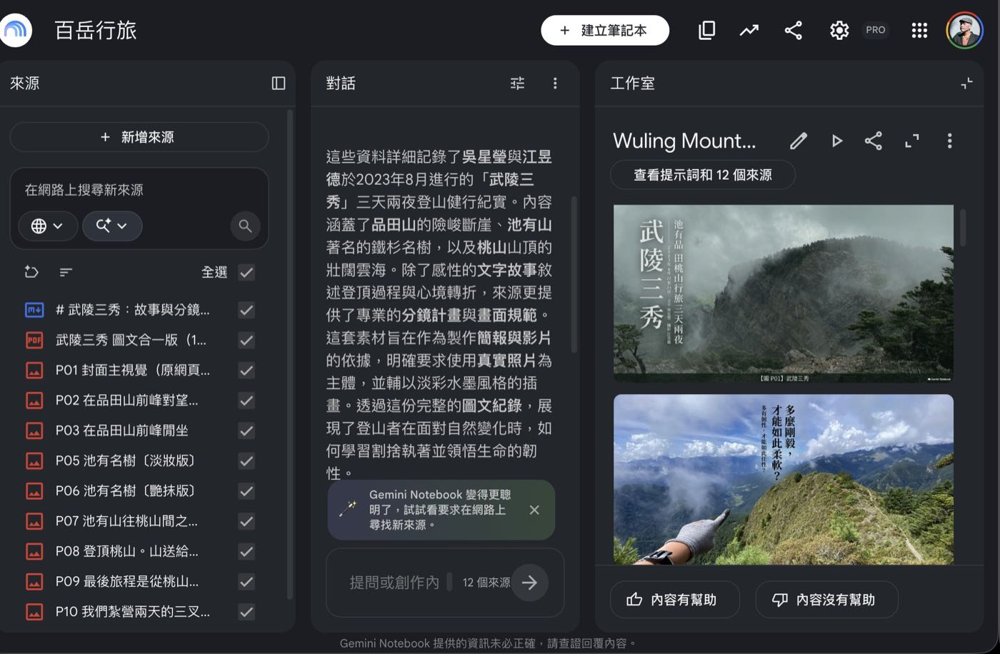
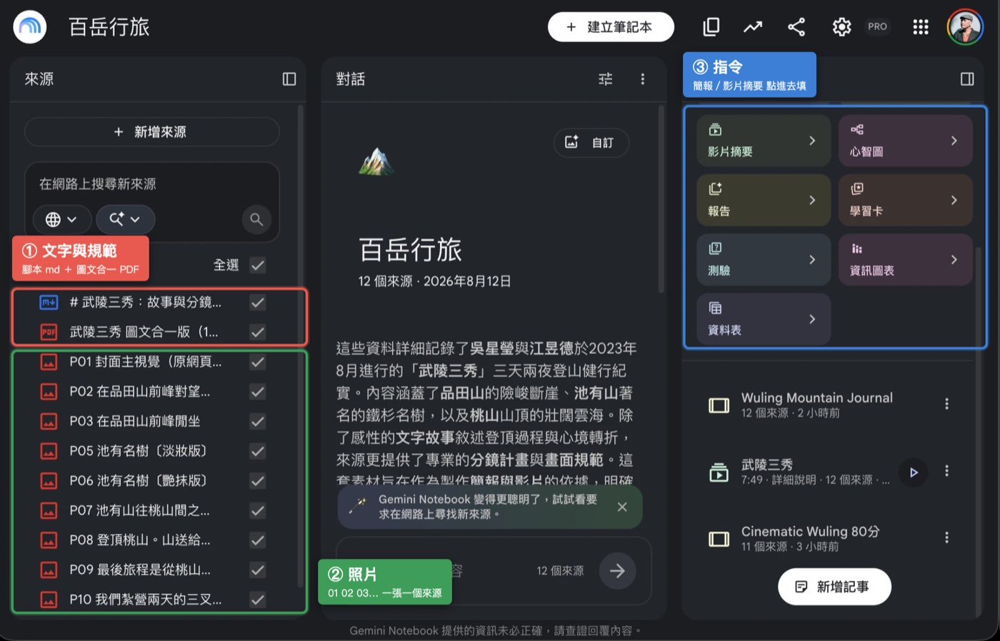
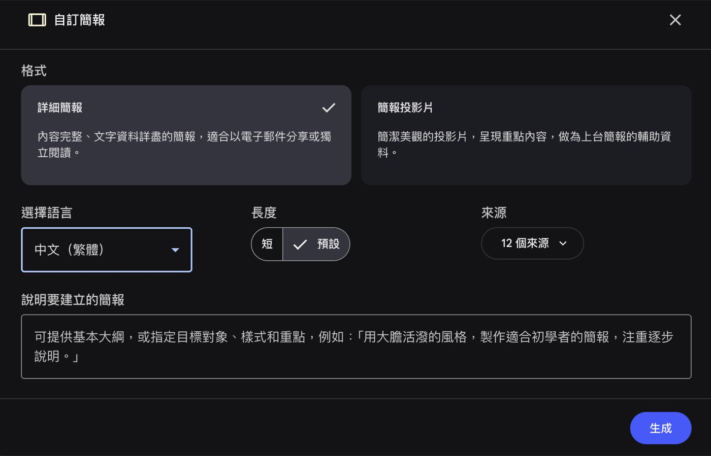
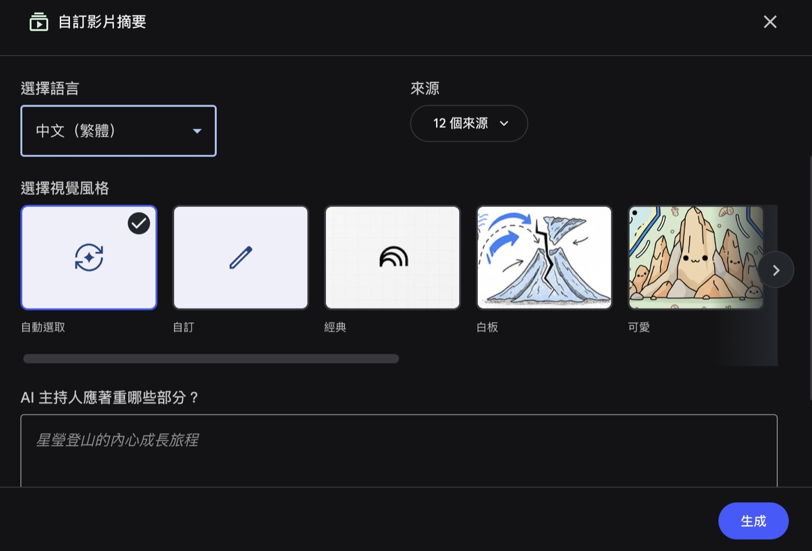

把文字丟給 AI、讓它連圖一起生，最快，但成品都長得差不多。如果你手上有真實照片，那是別人生不出來的東西。這篇講怎麼讓 NotebookLM 用你自己的照片排簡報。
- 手上有活動現場、產品實拍、旅行紀錄、課程側拍照片的人
- 做過幾份 AI 生成的簡報，開始覺得畫面都長得差不多的人
- 一份可以照抄的腳本格式
- 兩段可以直接複製的指令
- 交出去之前要看的三件事
成品長這樣
《百岳行旅 · 武陵三秀》，十五頁，一頁一個場景。文字是吳星瑩寫的遊記，照片是江昱德拍的。
點任一頁放大，可用左右鍵翻頁

核心：腳本寫在文案裡，指令只留規範
整套方法只有這一句。該做什麼寫在來源文案，不能做什麼寫在指令。
AI 每多一個沒被決定的問題，就多一個它自己發揮的空間。這段要不要分頁、標題下哪一句、這頁配哪張圖，先決定完，它就只剩渲染的工作。
另一個好處是指令可以很短。指令太長容易出事，尤其生影片摘要的時候。

腳本長這樣
一份 Markdown，最前面放規矩，接著逐頁寫清楚。
三個地方特別要注意。
腳本寫好之後，跟照片一起上傳。除了腳本，再傳一份圖文合一的 PDF（照片嵌在它對應的段落之間，每張下方接一行圖說），還有每張照片各自一個來源。那份 PDF 是把照片跟段落綁在一起的關鍵。
指令只有兩段
故事簡報
工作室點「簡報」，選自訂，貼進「說明要建立的簡報」那一格。

影片摘要
語言一樣先改成中文（繁體）。視覺風格保持預設的「自動選取」就夠用，這時候只有一格要填。

AI 主持人應著重哪些部分，這格管旁白，也是紅線要放的地方。
NotebookLM 沒有選旁白性別的參數，寫「請使用女性聲音」命中率很低。改成給它一個角色，聲音就是角色的自然結果。
紅線那句放最後一行，被截斷的機率最低。
想控制插畫的調性再選「自訂」，那時會多出「描述自訂的視覺風格」一格。一兩句就夠，例如「淡彩水墨，低對比、手繪感」「童話故事插圖，柔和色調」「手繪筆記感，鉛筆線條」。不管選哪種都補一句「插畫只當背景襯底，真實照片放大成畫面主體」。
交出去之前看三件事
成品匯出 PDF，逐頁看過。
- 照片是不是原檔。調出原圖比對主體、光線、人物穿著。不要看圖說就放行，圖說是它寫的。
- 純插畫頁有沒有標到照片編號。編號只能掛在真照片上。
- 有沒有同一句印兩次。這項最容易漏，因為注意力都在照片上。
同一頁修兩次還沒對就停手，改留白或人工後製。一直重生只會累積版本，不會收斂。